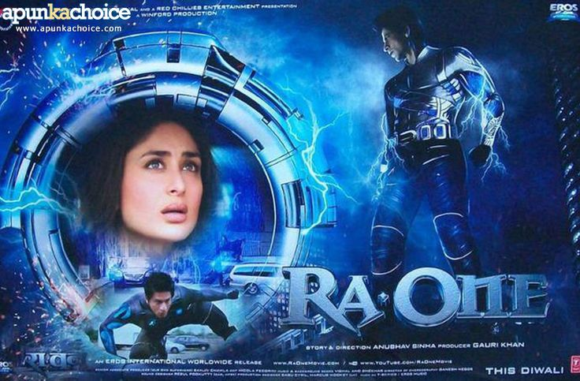

Sci-fi & Fantasy in Indian Cinema
Science fiction and fantasy are genres that open the door to the extraordinary. While sci-fi explores futuristic technology, space, and advanced science, fantasy delves into magical worlds, supernatural forces, and mythical creatures. Though traditionally niche in Indian cinema, these genres have carved a unique space in Bollywood by mixing Indian mythology, spirituality, and speculative storytelling.
Indian filmmakers are increasingly embracing visual effects and imaginative narratives to bring fantastical and futuristic tales to life. These genres offer a break from realism, transporting viewers into realms of possibility and wonder.
Popular Sci-fi & Fantasy Themes
- Supernatural Powers: Heroes or villains gifted with special powers (e.g., Krrish).
- Mythological Fantasies: Reimagining epic tales (e.g., Baahubali).
- Technology & AI: Robots, machines, or futuristic science (e.g., Robot, Ra.One).
- Time Travel & Parallel Worlds: Alternate timelines or realities (e.g., Brahmastra).
Notable Sci-fi & Fantasy Films
- Ra.One (2011, dir. Anubhav Sinha) – A virtual game villain comes to life
- Krrish series (2006–2013, dir. Rakesh Roshan) – India’s original superhero saga
- Robot (Enthiran) (2010, dir. S. Shankar) – A humanoid robot develops human emotions
- Baahubali (2015 & 2017, dir. S. S. Rajamouli) – An epic fantasy adventure inspired by mythology
- P.K (2014, dir. Rajkumar Hirani) – An alien questions human traditions and religion
- Brahmastra (2022, dir. Ayan Mukerji) – A fantasy adventure blending ancient weapons with modern power
|

|